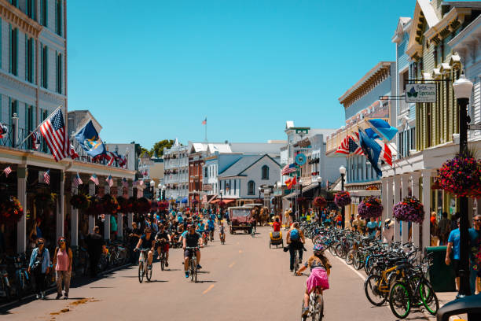

Mackinaw City is a village on the northern tip of Michigan’s Lower Peninsula. Mackinac Bridge crosses the Straits of Mackinac to the Upper Peninsula. Colonial Michilimackinac is a reconstructed 18th-century fort and fur-trading post. Founded in 1889, Old Mackinac Point Lighthouse has restored quarters and views from the top. Wilderness State Park includes stretches of Lake Michigan shoreline, trails and campsites. ― Google
History
Located at the eastern end of the Straits of Mackinac sits Mackinac Island (pronounced Mack-i-naw), nestled quietly in the place where Lake Michigan meets Lake Huron. Mackinac Island has a small year-round population of about 500 people, but in the summer, the population rises. The village’s tourism business brings in a brigade of workers who live on the island just for the warm months, which are an active time for this small resort and tourist destination. Often referred to as the “crossroads of the Great Lakes,” Mackinac Island has been a popular site since the late 1800s, and for good reason: the island is a truly unique place with a rich cultural and military history and an incredible natural beauty.
Since the original Native inhabitants, Mackinac Island has changed hands many times. The first European presence on the island was in the mid-1600s, and the first settlement was in 1671, when Father Jacques Marquette founded a mission there that lasted just briefly. After a year, the mission relocated—twice—eventually ending up near present-day Mackinaw City in 1708, where the French also built a fort for fur trading. British seized control of the fort after their victory in the Seven Years War. They subsequently dismantled the fort and moved the garrison and the fur trade back to Mackinac Island during the American Revolutionary War. Since Mackinac Island is raised in the middle and has tall limestone bluffs, the British theorized that it would provide better grounding for battle. There they built Fort Mackinac, though it was never attacked during the Revolutionary War. The United States acquired the territory and the fort after the Treaty of Paris ended the war in 1783, though the British didn’t officially give up ownership of the fort until the mid-1790s.
Mackinac Island was again a point of contention during the War of 1812, when surprised American troops surrendered Fort Mackinac (then called Fort Michilimackinac) to British soldiers. The British forces built a second fort on the island, Fort George, to use as a vantage point and stockade. American superiors, unhappy about the surrender, planned an attack to recapture the fort, and in 1814 the legendary Battle of Mackinac Island—the only battle ever actually fought on the island—ensued. Though the U.S. troops were handily defeated by the British-occupied forts, the end of the War of 1812 and the Treaty of Ghent returned the island and both forts to the control of American forces. They renamed Fort George “Fort Holmes” in honor of Major Andrew Holmes, who was killed during battle.
Key Attractions
These exotic attractions are a must go!!!

Things to Explore
Arch Rock is one of the geological highlights of Mackinac Island State Park. It is a natural rock soaring 149 feet above the Straits of Mackinac that appears to be suspended in midair.
Michigan's first state parkis Mackinac Island State Park, a landscape characterized by high limestone bluffs, beautiful vistas of sparkling water, vibrant forests, and mystical geological formations. With automobiles banned since 1898
Fort Mackinacis Iconic. The cannon blasts, the rifles fire, the soldiers march and history comes alive. The oldest building in Michigan and 13 other historical structures boast exhibits explaining everything from military training and battles to medical treatments to family life within the fort. More than just a military outpost, Fort Mackinac served as a home for soldiers and their families and eventually the headquarters for Mackinac National Park, where tourists to the island visited the great fortress on the bluff, much like they do today. This is Mackinac